Versión 1.0.0 · Noviembre de 2026 Windows 10/11 y Linux
Un poco de historia
MCP Raptor Player es una versión tributo por su aniversario, actualizada a este siglo por el autor. Retoma la idea original —manejar desde una sola pantalla la música, los comerciales y los efectos que salen al aire— con herramientas actuales: análisis automático de cada tema, mezcla inteligente, un motor de audio propio y control desde asistentes de inteligencia artificial mediante MCP.
¡Disfrútelo! Y no pida soporte: el Inyenieri hizo esto por nostalgia de radio y por hobby. Queda avisado: se usa a su propio riesgo. Gracias. Si le resulta útil, se aceptan sugerencias y donaciones por PayPal; el botón Donar con PayPal de Ayuda › Acerca de abre la misma página.
Raptor nació a mediados de 1997 como una solución de automatización de radio (radio automation). Su autor, Aníbal H. Flores, desarrolló la primera versión, Raptor 1, con las tecnologías de la época: Windows 95, una de las primeras versiones de Delphi y sus componentes VCL de audio. Le siguió Raptor II, cuya última versión es de 2007.
Raptor II en su última versión, de 2007.
Contenido
Parte I · Características técnicas
Qué es MCP Raptor Player
Requisitos y formatos
Arquitectura y motor de audio
Análisis automático de los temas
Mezcla entre temas y nivelación
Efectos, overlay y botonera
Tipos de elemento
Datos guardados
Control remoto por MCP
Parte II · Uso de la interfaz
Primeros pasos
La ventana principal
Armar y administrar la lista
Reproducir y mezclar
El panel de efectos
El editor de pistas
Clasificar el catálogo por tipo
Tandas programadas y registro de comerciales
Atajos de teclado
Mantenimiento del catálogo
Solución de problemas
Decisiones de diseño
Anexo
Complementos que mejoran el sonido
Parte I · Características técnicas
1. Qué es MCP Raptor Player
MCP Raptor Player es un reproductor de escritorio pensado para la emisión de radio. Reúne en una sola ventana:
Una lista de reproducción en secuencia que pasa de un tema al siguiente con mezcla (crossfade), manual o calculada a partir del análisis de cada tema.
Una botonera de efectos de 10 botones por hoja, con tantas hojas como haga falta, para disparar efectos, voces en off y cortinas por encima de la música (overlay, «pisar» el tema).
Un editor de pistas con forma de onda para ajustar el inicio y el fin de cada tema, su intro, su outro, la ventana donde se puede pisar y sus datos (tipo, título, artista, género, ranking, BPM).
Un servidor MCP (Model Context Protocol) embebido, que permite manejar el reproductor desde un asistente de IA como Claude: armar la lista, disparar efectos, mezclar o consultar qué está sonando.
2. Requisitos y formatos
Sistema operativo
Windows 10 u 11. Linux con PulseAudio o PipeWire (también funciona en WSL2 con WSLg); si no hay servidor de sonido usa ALSA.
Pantalla
Mínimo Full HD (1920 × 1080), con la escala de Windows al 100 %, 125 % o 150 %. Al 150 % los botones de las barras quedan solo con el icono para que entre también la botonera de efectos (ver Ocultar textos de los botones, en el menú Ventana). En pantallas mayores (QHD, 4K) la interfaz aprovecha el espacio extra; los textos que no entran completos muestran un tooltip con el texto entero.
Formato propio (JSON) y M3U para cargar listas de otros programas.
Salida de audio
La salida predeterminada del sistema para la música. La preescucha del editor puede usar otra placa (por ejemplo, unos auriculares).
3. Arquitectura y motor de audio
Diagrama de bloques
El diagrama muestra las partes del programa y cómo se relacionan: arriba, por dónde llegan las órdenes; en el medio, la lógica que decide qué suena y cuándo; abajo, el camino del audio hasta las placas de sonido.
Partes del programa: órdenes (azul), lógica (naranja), datos (violeta), audio (verde) y placas de sonido (gris). La línea punteada es la preescucha cuando comparte la salida de la música. Cada motor decodifica su archivo en un hilo propio y lo deja en un búfer de 1 s.
Qué hace cada parte
Bloque
Función
Ventana principal, editor y servidor MCP
Reciben las órdenes: del usuario (clics, teclas) o de un asistente de IA conectado por MCP. Las tres entradas llegan al mismo controlador, así que valen las mismas reglas.
Controlador
El centro del programa. Mantiene la lista y el selector, aplica las reglas (por ejemplo, que un Efecto no entre en la lista), actualiza la pantalla y, en un ciclo periódico, avisa a los gestores para que avancen.
Datos guardados
Lee y escribe las fichas de cada archivo, la botonera, las listas, las preferencias y el registro de comerciales (ver la sección 8).
Análisis
Trabaja en segundo plano sin frenar la interfaz: lee etiquetas y calcula forma de onda, puntos de mezcla, tempo, sonoridad y la ventana de overlay sugerida. Sus resultados vuelven al controlador y se guardan en las fichas.
Gestor de reproducción
Decide la secuencia: qué tema sigue, cuándo empieza la mezcla, cuánto dura y con qué volumen (nivelación). Alterna los motores A y B: mientras uno termina, el otro entra.
Gestor de efectos
Decide cuándo suena un efecto (modo libre o trabado a la ventana de overlay), con qué volumen y cuánto baja la música. Programa la bajada y la vuelta de la música en el atenuador del mezclador.
Salida de preescucha
Elige por dónde suena la preescucha del editor: por la voz de preescucha del mezclador principal (con la música detenida) o por un mezclador aparte en otra placa.
Motores
Cada uno abre un archivo, lo decodifica y lo remuestrea a la frecuencia de la placa en su propio hilo, y deja el audio listo en un búfer. Saben en qué posición está su tema y pueden arrancar en un frame exacto.
Mezclador principal
Suma las cuatro voces (motores A y B, efectos y preescucha) con su volumen, aplica el atenuador común a la música y el recortador suave, y entrega el resultado a la placa. Lleva el reloj de frames con que se sincronizan mezclas y efectos.
Mezclador aparte
Solo existe si se eligió otra salida para la preescucha. Tiene su propio reloj y su propio atenuador, así que la prueba no toca lo que sale al aire.
Características del motor
Decodificación nativa de todos los formatos, sin depender de códecs del sistema, y remuestreo de alta calidad a la frecuencia de la placa.
Mezclador propio con cuatro voces: dos se alternan para la música (mientras una termina, la otra entra), una emite los efectos de la botonera y la cuarta es la preescucha del editor.
Sincronía al cuadro (frame) de audio: la pista que entra en una mezcla y los efectos se programan en el instante exacto de la salida, no «cuando la interfaz llega».
Atenuador común: mientras suena un efecto, la música baja con rampas suaves programadas; una mezcla que empieza durante el efecto ya entra atenuada.
Recortador suave en la suma final: por encima de cierto nivel la señal se comprime hacia el máximo sin el chasquido de un recorte brusco.
Un segundo de búfer por voz, para que la máquina ocupada no produzca cortes.
Preescucha por otra salida: si se elige otra placa, la preescucha abre allí un mezclador propio (tema y efecto de prueba), con lo que se puede preescuchar con la música al aire.
4. Análisis automático de los temas
Cada archivo que entra en la lista se analiza en segundo plano, sin frenar la interfaz. El resultado se guarda y no se vuelve a calcular.
Etiquetas: título, artista, género, álbum, año y duración.
Forma de onda, que se usa en el editor y para todo el análisis siguiente (se guarda en caché).
Puntos automáticos: inicio y fin del tema sin los silencios, intro (hasta dónde llega el comienzo instrumental) y outro (desde dónde el tema empieza a apagarse).
Tempo (BPM) y fase de los golpes, estimados en tres bandas (graves, medios y agudos), así que un tema sin bombo también marca el pulso.
Sonoridad en LUFS y pico real, para nivelar el volumen entre temas.
Ventana de overlay sugerida: busca un tramo instrumental de al menos 4 segundos (sin voz cantada) donde se puede pisar el tema. Acierta en la mayoría de los temas con voz; con voces muy procesadas, coros o rap puede fallar, y siempre se puede corregir a mano.
Todo lo que el análisis propone se muestra como Automático. Si el usuario lo cambia, pasa a Manual y el análisis ya no lo toca. El botón Volver al automatico del editor deshace los cambios manuales.
5. Mezcla entre temas y nivelación
Fader (mezcla manual)
El deslizante Fader fija los segundos de mezcla (0 a 15) al pasar de tema con Siguiente y los del fundido al Detener. Cuando un tema termina solo y pasa al siguiente, se superponen tantos segundos como el menor entre la outro del que sale y la intro del que entra (la columna Mezcla de la lista los muestra).
Cómo baja el tema que sale
Desde la outro: si la outro empieza antes que la mezcla, el tema que sale ya empieza a bajar desde el inicio de su outro, en forma pareja, hasta quedar 6 dB abajo cuando entra el siguiente. Así el final no queda a todo volumen esperando la mezcla.
Durante la mezcla: baja con una pendiente que se acentúa hacia el final: a mitad de la mezcla está 12 dB abajo y a tres cuartos, más de 24 dB abajo, para no tapar al que entra. El que entra sube rápido al principio (curva de seno con el crossfade inteligente, línea recta sin él).
Si el tema que sale tiene un fundido natural (baja solo en su grabación), no se lo atenúa antes de la mezcla: durante la mezcla solo se lo acompaña en línea recta hasta el silencio.
Crossfade inteligente
Con la opción Crossfade inteligente, la mezcla se decide con el análisis de los dos temas:
Sin silencios muertos: el tema que sale termina en su marca de fin y el que entra arranca en su marca de inicio.
Duración adaptada: la mezcla dura lo mismo que la más larga entre la outro del tema que sale y la intro del que entra, con un mínimo de 2 y un máximo de 12 segundos.
Volumen parejo: el que entra sube con curva de potencia y el que sale baja como se explica arriba. Si el que entra ya tiene un fundido natural en ese tramo, no se lo vuelve a atenuar, para evitar un «bache» de volumen.
Alineación de golpes: si el final del tema que sale y el comienzo del que entra tienen el mismo tempo (o uno es el doble del otro), el tema que entra se adelanta o se atrasa menos de medio golpe para que los golpes de los dos coincidan.
Nivelar volumen
La opción Nivelar volumen lleva cada tema a una misma sonoridad, elegida en el combo de al lado: −14 LUFS (más rango dinámico), −11 LUFS (el predeterminado) o −8 LUFS (más fuerte). Cada objetivo tiene límites de subida y de bajada y un techo de pico real.
6. Efectos, overlay y botonera
Botonera: 10 botones (0 a 9) por hoja y tantas hojas como se necesiten. Cada botón tiene un archivo de audio; se disparan con un clic o con las teclas 0–9. Al pasar el puntero por un botón se ve su archivo y, si tiene, su nota (por ejemplo, «Aplauso corto: usar al cierre del programa»); los botones con nota llevan un pequeño ícono abajo a la izquierda. La nota se escribe con Editar... del botón, en la solapa Datos.
Ventana de overlay: tramo de cada tema donde se lo puede pisar (normalmente instrumental). Se sugiere sola y se puede ajustar en el editor.
Modo libre: el efecto suena apenas se pulsa. Modo trabado (sin Modo libre): el efecto tiene que sonar entero dentro de la ventana de overlay del tema en curso. Antes de la ventana, espera a que se abra. Dentro, suena si todavía cabe completo. Si ya no cabe, espera la ventana del tema siguiente. Un tema sin ventana deja sonar el efecto enseguida.
Atenuación de la música: la música baja un instante antes del efecto y vuelve con una rampa cuando termina. Con Ajuste inteligente, el volumen del efecto se iguala con la música y la música baja según lo fuerte que suene ese tramo.
Efecto fijado: a un tema se le puede fijar un efecto que suena solo, cada vez que sale el tema, dentro de su ventana.
Tramo del efecto: si en el editor se fijan a mano el inicio y el fin del archivo de un efecto, suena solo ese tramo.
7. Tipos de elemento
Cada elemento del catálogo tiene un tipo que decide cómo se trata: Tema, Tema editado, Comercial, Anuncio, Publicidad, Podcast, Efecto o Seco. El género queda libre para el estilo musical (Rock, Pop, Institucional...) y no cambia nada de cómo suena: un tema de género «Publicidad» sigue siendo un Tema. Un elemento sin clasificar suena como un Tema, pero no puede ir en tandas ni órdenes.
Tipo
Franja
Qué es
En la lista
Tema
Música: se mezcla con el anterior y el siguiente.
Sí. La validación marca los repetidos.
Tema editado
Un tema con una locución o edición especial para la radio (radio edit, intro locutada, versión acortada). Se trata igual que un Tema; el tipo sirve para reconocerlo y buscarlo (tipo:"tema editado"). Su ícono es dorado.
Sí, como un Tema: se mezcla y la validación marca los repetidos.
Comercial
Propaganda facturable y calendarizada: avisos pautados con horario de emisión.
Sí. Forma tanda; se anota en el registro de comerciales.
Anuncio
Mensaje propio de la emisora (promociones de la programación, avisos institucionales).
Sí. Forma tanda; no se anota en el registro (no se factura).
Publicidad
Propaganda facturable pero no calendarizada (se emite cuando hay lugar).
Sí. Forma tanda; se anota en el registro de comerciales.
Efecto
Cortos de audio para overlay: se usan para pisar los temas.
No. Solo pueden estar en la botonera.
Seco
Voces en off. También se usan para pisar, pero además pueden insertarse en la lista como separadores.
Sí, como separador; no se anota en el registro.
Podcast
Programa completo pregrabado. Es calendarizable: se pauta en la pauta de tandas para que salga a cierta hora (sección 17).
Sí, sin mezcla. Puede ir en una tanda; no se anota en el registro (no se factura).
Cada tipo tiene su ícono, que se ve junto al tipo en la lista, el catálogo, los avisos, las tandas, las órdenes y el editor; el de los tipos sin mezcla lleva el color de su franja. Un elemento sin tipo se marca con en los selectores de avisos, y el anuncio HTH y los bloques fijos tienen el suyo.
Un Tema o un Tema editado se mezcla con el anterior y el siguiente. Los otros seis tipos comparten estas reglas:
Suenan sin mezcla: no se mezclan con el tema anterior ni con el siguiente; el siguiente arranca cuando termina el anterior.
Pueden repetirse en la lista (por ejemplo, un comercial en varias tandas); la validación no los marca como duplicados.
No tienen ventana de overlay ni efecto fijado. En modo trabado no aceptan efectos (el efecto espera al tema siguiente); en modo libre, sí.
Al mezclar la lista al azar, se mezclan como cualquier tema. Para que una tanda quede entera, en su lugar y en su orden, enciérrela en un bloque fijo (sección 12).
Los combos de efectos del editor (efecto fijado y efecto de prueba) solo ofrecen los archivos de la botonera de tipo Efecto o Seco.
Catálogos de versiones anteriores. Antes, el género hacía de tipo. La primera vez que se abre esta versión, cada ficha recibe su tipo a partir de su género, sin distinguir mayúsculas ni acentos y en plural o compuestos («Anuncios», «Publicidad radial», «Efectos de sonido», «Tema seco»); cualquier otro género («Rock») pasa a Tema, y las fichas sin género quedan sin clasificar. El género no se toca, y antes de reescribir el catálogo se deja una copia, mezcla.json.antes-del-tipo. Lo mismo vale para un archivo nuevo: si sus etiquetas dicen «Comercial», entra como Comercial.
La búsqueda por tipo (tipo: o type:) acepta los nombres en español y en inglés: tipo:"tema editado" y type:"edited song" encuentran lo mismo.
8. Datos guardados
El reproductor guarda todo en la carpeta .mcp-raptor-player dentro de la carpeta del usuario (en Windows, C:\Users\<usuario>\.mcp-raptor-player; en Linux, ~/.mcp-raptor-player):
Archivo o carpeta
Contenido
mezcla.json
La ficha de cada archivo de audio: puntos de mezcla, ventana de overlay, tipo, título, artista, género, álbum, año, nota, ranking, BPM, efecto fijado y última reproducción. Si el archivo vuelve a la lista, recupera todo.
botonera.json
Las hojas de efectos, el archivo de cada botón y los ajustes del panel de efectos.
preferencias.json
Fader, opciones de mezcla, última lista y último tema, posición del editor, salida y volumen de la preescucha, carpeta de las locuciones del anuncio HTH, localidad del clima, idioma de la interfaz, si los textos de los botones están ocultos y si los ajustes de los efectos están desplegados.
listas\lista.json
La lista en curso, que se recupera al abrir el programa.
tandas.json
Las tandas programadas: avisos, horarios, tolerancia, duración máxima y la última salida atendida (para no repetirla si el programa se reinicia).
anunciantes.json
Las fichas de los anunciantes: nombre comercial, razón social, CUIT, rubro, contacto, teléfono, correo, dirección, agencia, notas y si está activo.
ordenes.json
Las órdenes de publicidad: anunciante, rubro, vigencia, días, franja, frecuencia, avisos en rotación y tandas permitidas.
pauta\AAAA-MM-DD.json
La pauta de cada día (dónde fue cada aviso de las órdenes y lo que no entró) y las reposiciones pendientes. Se conservan tres meses, como el registro.
certificados\
Los certificados de emisión por anunciante, en CSV.
comerciales\AAAA-MM.csv
El registro de salidas al aire de la propaganda facturable (Comercial y Publicidad), un archivo por mes. Se conservan el mes actual y los dos anteriores.
reubicaciones.json
Los archivos reubicados en el mantenimiento del catálogo (ruta anterior y ruta nueva), para que las listas guardadas con la ruta anterior se abran con la nueva.
servicios\
El último anuncio de hora, temperatura y humedad armado y la última voz dicha sobre una base (se vuelven a armar cada vez que salen al aire).
ondas\
Caché de las formas de onda (se puede borrar; se vuelve a calcular). El mantenimiento del catálogo borra las que ya no se usan.
logs\
Bitácora del programa, útil para diagnosticar problemas.
La variable de entorno RAPTOR_CARPETA_DE_DATOS permite usar otra carpeta (por ejemplo, una por estudio).
9. Control remoto por MCP
El reproductor incluye un servidor MCP que escucha solo en el propio equipo, en http://127.0.0.1:8765/mcp, y rechaza pedidos de páginas web. La variable RAPTOR_MCP_PUERTO cambia el puerto; con 0 el servidor queda desactivado.
Para conectarlo con Claude Code:
claude mcp add --transport http raptor http://127.0.0.1:8765/mcp
Las herramientas disponibles son:
Herramienta
Qué hace
listar_pistas
Lista las pistas con sus datos, puntos de mezcla y cuál suena.
agregar_pistas, quitar_pistas
Agrega archivos o carpetas, con o sin sus subcarpetas (en una posición), o quita pistas por posición o ruta.
mover_pista, ordenar_lista
Cambia una pista de lugar u ordena la lista.
definir_mezcla, sugerir_puntos
Fija inicio, fin, intro, outro y ventana de overlay, o consulta lo que propone el análisis.
definir_datos
Fija el tipo (Tema, Comercial, Anuncio, Publicidad, Efecto o Seco; vacío lo deja sin clasificar) y corrige título, artista, género, álbum, año, nota, ranking, BPM o efecto fijado. Por ruta sirve también para un efecto de la botonera o un tema que no está en la lista. Si la pista está sin clasificar y se indica un género que nombra un tipo («Comercial»), toma ese tipo.
estado_del_reproductor
Qué suena, posición, próxima pista, controles y botonera.
controlar_reproduccion, seleccionar_pista
Reproducir, pausar, detener, siguiente, anterior; marcar la próxima pista.
ajustar_controles
Volumen, fader, repetir, crossfade, nivelación y opciones de efectos.
Programa una tanda (o reemplaza la del mismo nombre): avisos, primer horario, intervalo, horario límite, días, tolerancia antes y después, modo (tolerancia o exacta) prioridad y duración máxima (duracion_maxima_segundos).
encolar_tanda
Encola ya una tanda programada en el próximo corte, fuera de su horario.
listar_tandas
Las tandas programadas con su regla, sus avisos, la próxima salida y la última atendida.
quitar_tanda
Quita una tanda de la programación (lo ya encolado queda en la lista).
registro_de_comerciales
Salidas al aire entre dos fechas, con su tanda y su orden; se puede filtrar por anunciante, título o tanda.
programar_orden
Carga una orden de publicidad (o reemplaza la del mismo nombre): anunciante, rubro, vigencia, días, franja, una frecuencia (cada_minutos, veces_por_dia u horarios), avisos, tandas permitidas y prioridad.
listar_ordenes
Las órdenes con cuántas salidas se ubicaron hoy de las que piden.
quitar_orden
Quita una orden: sus avisos dejan de repartirse.
pauta_del_dia
Dónde va cada aviso de las órdenes en las tandas de un día y lo que no se pudo ubicar, con su motivo.
certificado_de_emision
Certificado de un anunciante entre dos fechas: contratadas, emitidas completas, cortadas y cumplimiento por orden; también queda en un CSV.
registrar_anunciante
Carga o actualiza la ficha de un anunciante; los datos que se omiten conservan su valor. Valida el CUIT y el correo. Con nombre_anterior lo renombra y sus órdenes pasan al nombre nuevo.
listar_anunciantes
Los anunciantes con su ficha, sus órdenes y lo que falta para facturarles, y los nombrados en órdenes que no tienen ficha.
quitar_anunciante
Quita la ficha de un anunciante sin órdenes (si tiene, hay que quitarlas o desactivarlo).
encolar_pista
Encola una pista como la siguiente: va justo después de la que suena y se mezcla con su final. Si eso la saca de un bloque fijo, lo informa y pide confirmarlo con sacar_del_bloque.
buscar_en_catalogo
Busca temas del catálogo por título, artista, tipo, género, álbum o archivo, o con los prefijos de la búsqueda (ranking:>=4 -sonado:<30d, sección 12), y devuelve sus rutas, para insertarlos con agregar_pistas.
bloque_fijo
Encierra un tramo de la lista en un bloque fijo, que Mezclar y BPM no cambian.
base_hth
Cambia la base musical de un anuncio HTH de la lista o se la quita.
insertar_hth
Inserta el anuncio de hora, temperatura y humedad (con una base musical, si hay) en una posición o después de la seleccionada.
Un asistente conectado puede, por ejemplo: «después del tema que suena, agregá una hora de temas que no se pasan hace mucho y con un BPM no mayor a 70» o «pisá el tema con el efecto 4 de hoja 1». Las mismas reglas de la interfaz valen por MCP: un archivo de tipo Efecto no entra en la lista y un tema de la lista no puede pasar a tipo Efecto.
Parte II · Uso de la interfaz
10. Primeros pasos
Windows
Ejecute mcp-raptor-player.exe (en los paquetes publicados, MCPRaptorPlayer.exe). Para tener el icono en la barra de tareas, ábralo y elija Anclar a la barra de tareas. Este manual se abre desde Ayuda › Manual si el archivo Raptor_Manual_es.pdf está junto al ejecutable.
Linux
El script recursos/linux/instalar.sh copia el programa a ~/.local/bin e instala el lanzador y el icono, para que aparezca en el menú de aplicaciones.
Al abrir
La ventana se maximiza y recupera la última lista, con el último tema marcado. Si el servidor MCP no puede usar su puerto, el reproductor funciona igual, sin control remoto.
Idioma
La interfaz está en español y en inglés. La primera vez se abre en inglés si la cuenta del sistema está en inglés, y en español en cualquier otro caso. Para cambiarlo, use Ventana › Idioma / Language (el menú se llama igual en los dos idiomas, para encontrarlo aunque no se entienda el actual). El cambio es inmediato, sin reiniciar, y se recuerda para la próxima vez.
Se traducen los menús, botones, columnas, ayudas, avisos y mensajes, los nombres de los tipos y el certificado de emisión.
No cambian los datos guardados (el catálogo, las listas, las tandas, las órdenes y el registro de comerciales siguen igual en cualquier idioma) ni las descripciones de las herramientas MCP, que están en español.
Las fechas se muestran como día/mes/año en los dos idiomas.
Este manual está en español y en inglés: Ayuda › Manual abre el del idioma de la interfaz (Raptor_Manual_es.pdf o Raptor_Manual_en.pdf) y, si falta, el otro.
11. La ventana principal
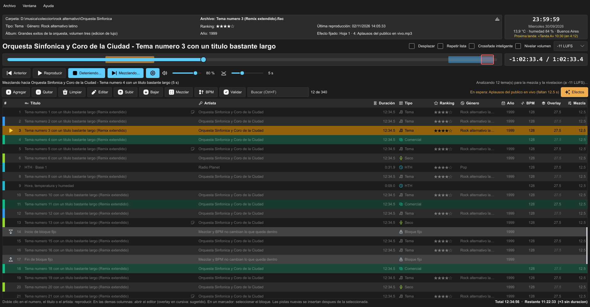
Ventana principal con una lista de ejemplo.
De arriba hacia abajo:
MenúArchivo (cargar y guardar listas, mantenimiento del catálogo), Ventana (ubicación del editor, idioma) y Ayuda (este manual y Acerca de, con botones para escribir al autor, abrir el repositorio en GitHub y donar por PayPal).
Detalles del tema marcado (o del que suena): la carpeta y el nombre del archivo, tipo y género, álbum, ranking, año, última reproducción y efecto fijado (el título y el artista están en la lista y, del que suena, debajo, en grande). A la derecha, el reloj con la fecha. Con el botón de la esquina () el panel muestra en cambio la forma de onda del tema (ver más abajo). A la derecha, el reloj: la hora, la fecha, el clima de la localidad elegida (temperatura, humedad y localidad; un clic permite cambiarla y al pasar el puntero se ve cuánto hace de la última lectura) y, si hay, la próxima tanda.
Lo que suena y, en la misma línea, las opciones Desplazar, Repetir lista, Crossfade inteligente, Nivelar volumen y el objetivo LUFS.
Barra de progreso: un clic o un arrastre salta a esa posición. Muestra la ventana de overlay (naranja si es sugerida, rosa si la fijó usted), la outro (celeste sugerida, verde fijada; desde ahí el tema empieza a bajar) y en violeta donde se solapan. Un recuadro rojo marca la mezcla efectiva con el tema siguiente: el tramo en que los dos suenan juntos, que con el crossfade inteligente dura de 2 a 12 s y puede ser más corto o más largo que la outro. A la derecha, el tiempo: un clic alterna entre transcurrido, restante y segundos restantes o transcurridos sobre el total; se pone naranja mientras mezcla con el tema siguiente.
Transporte (Anterior, Reproducir/Pausa, Detener, Siguiente), el engranaje () y los deslizantes de volumen (, doble clic: 80 %) y fader (, segundos de mezcla y de fundido; doble clic: 5 s). El engranaje muestra u oculta el volumen, el fader y las opciones de reproducción: ocultos, queda más lugar para el nombre del tema y la ventana se ve más despejada. La elección se recuerda.
Barra de la lista: Agregar, Quitar, Limpiar, Editar, Subir, Bajar, Mezclar, BPM, Validar, el buscador y el botón Efectos, que muestra u oculta la botonera.
La lista: posición, título, artista, duración, tipo (con su ícono), ranking, género, año, BPM, ventana de overlay y segundos de mezcla con el siguiente; cada encabezado lleva el ícono de su dato. La pista que suena (o está en pausa) tiene fondo ámbar, el número en negrita y un ícono de reproducir junto al número.
Barra de estado: ayuda, avisos y, a la derecha, el total de la lista y lo que falta sonar (descontando las mezclas).
Forma de onda en el panel de detalles
El botón de la esquina del panel de detalles alterna entre los datos del tema y su forma de onda: barras de nivel con la mitad superior de la onda (el pico más tenue y, encima, el nivel promedio), escaladas al punto más fuerte del tema. Sirve para ver de un vistazo dónde arranca, dónde crece y dónde termina. La elección se recuerda.
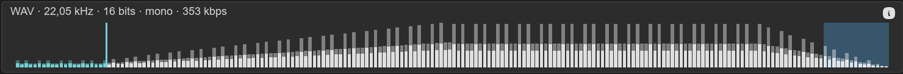
Forma de onda del tema que suena, con sus datos técnicos arriba: lo reproducido va en el color de la barra de progreso, la ventana de overlay en naranja y la mezcla con el tema siguiente en el recuadro rojo.
Muestra el mismo tema que los datos: el marcado con el selector o, si no hay, el que suena.
Arriba van los datos técnicos del archivo: formato, frecuencia de muestreo, bits por muestra (en los formatos sin pérdida), canales y tasa media en kbps (por ejemplo, MP3 · 44,1 kHz · estéreo · 320 kbps) y, al final, el título y el artista; estos se omiten cuando es el tema que suena, porque ya se ven abajo, en grande.
La barra de progreso tiene el mismo ancho que el panel, y el medidor de tiempo el mismo que el reloj: las marcas de la onda y las de la barra quedan una encima de la otra.
Usa los mismos colores que la barra de progreso: la ventana de overlay en naranja (rosa si la fijó usted), la outro en celeste (verde si la fijó usted), violeta donde se solapan y el recuadro rojo de la mezcla efectiva con el tema siguiente.
Si es el tema que suena, la parte ya reproducida va en el color de la barra de progreso, con una línea en la posición, y un clic salta a ese punto.
Se arma con la forma de onda que ya guarda el análisis de la lista, en otro hilo y con 200 barras: no vuelve a leer el audio ni afecta la reproducción. Si el tema todavía se está analizando, aparece al terminar.
Íconos de los datos
Cada dato tiene un ícono, el mismo en todas las ventanas: en los encabezados de las columnas (lista, catálogo, avisos, tandas, órdenes, anunciantes y mantenimiento) y en los rótulos de la solapa Datos del editor. Al pasar el puntero por un encabezado se ve qué muestra la columna. Si una columna queda muy angosta (ventana chica o letra grande), el encabezado muestra solo el ícono y el título completo aparece en el tooltip.
Ícono
Dato
Ícono
Dato
Título, nombre de una tanda
Artista
Duración
Tipo (en cada fila, el ícono del tipo: ver sección 7)
Ranking
Género
BPM (tempo)
Ventana de overlay
Segundos de mezcla
Álbum
Año
Nota
Última reproducción (Sonó)
Ya está en la lista
Anunciante
Razón social
CUIT
Rubro
Contacto
Orden de publicidad
Activa
Estado
Horarios de una tanda
Entrada (tolerancia o a hora exacta)
Avisos de una tanda
Próxima salida
Salidas de una orden
Vigencia
Salidas ubicadas hoy
Ubicación anterior y nueva de un archivo (mantenimiento)
Franjas de color de la lista
A la izquierda de cada fila puede haber una o dos franjas:
Color
Significado
Comercial (además, la fila tiene fondo verde azulado, igual que Anuncio y Publicidad)
Anuncio
Publicidad
Seco
Podcast
Efecto (solo se ve si un archivo cambia de tipo mientras suena; no puede quedar en la lista)
Anuncio de hora, temperatura y humedad (HTH)
Marcador de inicio o de fin de bloque fijo (toda la fila en gris, con su ícono). Las pistas dentro del bloque llevan esta línea a la derecha.
El tema tiene un efecto fijado
Coincide con la búsqueda
12. Armar y administrar la lista
Agregar abre un menú con estas opciones:
Archivos...: el selector de archivos (se pueden elegir varios).
Carpeta con subcarpetas...: se elige una carpeta y se recorre con todas sus subcarpetas. Antes de agregar, un aviso informa cuántos archivos de audio encontró y en cuántas subcarpetas, y pide confirmación. Entran carpeta por carpeta: primero los archivos de cada carpeta por nombre y después los de sus subcarpetas.
Desde el catálogo... (Ctrl+Mayús+F): abre el buscador del catálogo (ver más abajo).
Fijar la selección como bloque, Inicio de bloque fijo y Fin de bloque fijo: marcadores de bloque fijo (ver más abajo).
Las pistas nuevas entran después de la seleccionada, o al final si no hay selección. Al terminar, la barra de estado resume cuántas se agregaron y por qué no entraron las demás: las que ya estaban en la lista se omiten y las de tipo Efecto quedan afuera.
Quitar saca las pistas seleccionadas; Limpiar, toda la lista. Ninguno borra archivos del disco. La pista que suena (o está en pausa) no se quita: si está en la selección, se quitan las demás y ella queda. Si la selección tiene marcadores de bloque fijo y temas, el primer Quitar saca solo los marcadores y deja los temas seleccionados; un segundo Quitar los saca a ellos.
Subir y Bajar mueven la selección.
Mezclar desordena al azar toda la lista o, si hay varias pistas seleccionadas, solo esas. El tema que suena queda primero. Lo que está en un bloque fijo no se toca: para que una tanda de comerciales no se desarme, enciérrela en un bloque fijo.
BPM ordena por tempo, de menor a mayor (a igual tempo, primero el de mayor ranking). Tampoco toca los bloques fijos.
Validar revisa que existan los archivos (ofrece quitar los que faltan) y busca temas repetidos: mismo título y artista en otro archivo. Pregunta uno por uno si quitarlos.
Buscar (Ctrl+F): busca por título, artista, tipo, género, álbum o archivo. #508 salta a la pista 508, y con prefijos se busca por un dato en particular: ranking, año, BPM, duración o fecha de la última reproducción (ver Búsqueda con prefijos, más abajo). ↑↓ o Enter saltan entre los resultados; Esc limpia.
Columnas: número, Título, Artista, Duración, Tipo, Ranking (de 0 a 5 estrellas, se fija en el editor), Género, BPM, Overlay y Mezcla. Un tema con nota muestra un pequeño ícono a la derecha del título; al pasar el puntero por el título se ven la nota y la ruta del archivo. Overlay muestra solo los segundos que dura la ventana de overlay (en cursiva si es la sugerida por el análisis); su inicio y su fin se ven al pasar el puntero, en el panel de detalle y en el editor.
Selección: clic para una pista, Ctrl+clic para sumar y Mayús+clic para un rango.
Doble clic en el número, el título o el artista: reproduce ese tema. En las demás columnas: abre el editor. En un marcador de bloque fijo: selecciona el bloque completo.
Clic derecho en una fila: Reproducir, Encolar como siguiente (lleva el tema justo después del que suena, para que el final del actual se mezcle con él sin seguir el orden de la lista; lo demás queda en su orden; si el tema está dentro de un bloque fijo y lo saca de él, pide confirmación), Editar pista..., Quitar de la lista y Descatalogar... (quita el tema y borra todos sus datos guardados; el archivo de audio no se borra). En un anuncio HTH aparece además Base del anuncio HTH (ver la sección 14).
Listas con nombre:Archivo › Cargar lista... (Ctrl+O, también M3U), Guardar lista (Ctrl+S) y Guardar lista como... (Ctrl+Mayús+S). El título de la ventana muestra la lista abierta y un asterisco si tiene cambios sin guardar. Las M3U de otros programas se abren aunque estén en la codificación de Windows (las de Winamp o el Reproductor de Windows) o tengan direcciones file:// (las de VLC), y sus rutas relativas son relativas a la carpeta de la lista. Una lista guardada en otro equipo o por otro usuario conserva sus bloques fijos y sus anuncios HTH.
Bloques fijos
Un bloque fijo es un tramo de la lista que Mezclar y BPM no cambian: por ejemplo, una tanda con su orden, un programa armado a mano o lo que tiene que salir a una hora. Se marca con dos filas especiales, un inicio y un fin, que se ven en gris con su propio ícono; las pistas que quedan entre los dos llevan una línea gris a la derecha.
Agregar › Fijar la seleccion como bloque pone un inicio antes de la primera pista seleccionada y un fin después de la última. Inicio de bloque fijo y Fin de bloque fijo insertan uno solo, después de la seleccionada.
Al mezclar u ordenar, lo de adentro queda en su lugar y en su orden, y solo se reordena lo que está afuera. La barra de estado dice cuántos temas quedaron sin cambios.
Los marcadores no suenan: la reproducción y las mezclas pasan de largo, sin aviso, y la mezcla se hace entre el tema anterior y el siguiente. No suman duración y se guardan con la lista.
Un inicio sin fin fija hasta el final de la lista; un fin sin inicio fija desde el fin anterior (o desde el principio).
Doble clic en el inicio o en el fin selecciona el bloque completo, con sus dos marcadores.
Con el bloque seleccionado, Quitar lo deshace: saca los marcadores y los temas quedan en su lugar, seleccionados. Si se pulsa Quitar otra vez, se quitan también los temas. Un marcador suelto se quita como cualquier fila, y se mueve con Subir y Bajar.
Buscar en el catálogo
El catálogo guarda los datos de cada tema que alguna vez entró a la lista. Archivo › Buscar en el catalogo..., Agregar › Desde el catalogo... o Ctrl+Mayús+F abren un buscador para volver a traerlos sin recorrer carpetas.
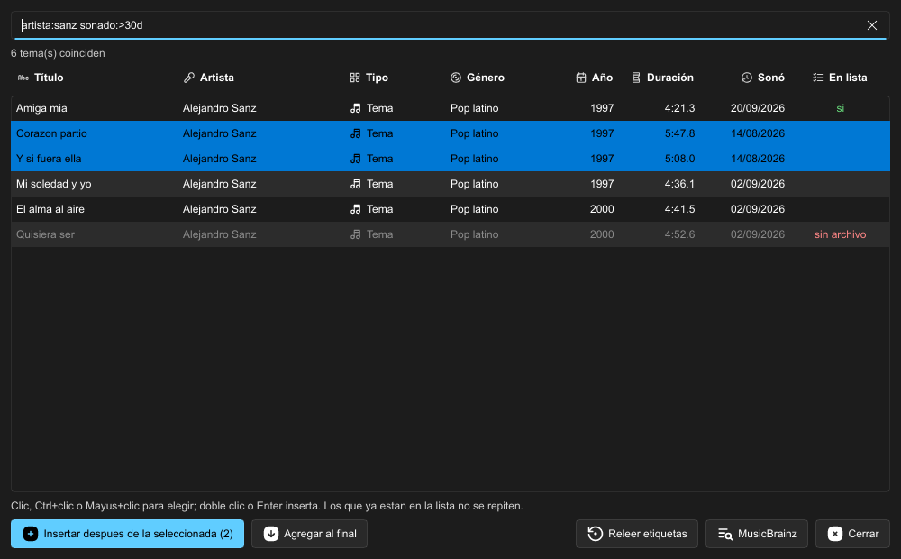
Temas de Alejandro Sanz que no suenan hace más de 30 días («artista:sanz sonado:>30d»); dos elegidos para insertar.
Busca mientras se escribe, por título, artista, tipo, género, álbum o nombre de archivo. Tienen que aparecer todas las palabras, sin importar mayúsculas ni acentos. También entiende los prefijos de la Búsqueda con prefijos (por ejemplo ranking:>=4 sonado:>30d). Con el texto vacío muestra todo el catálogo, por artista y título (hasta 500 temas: si hay más, afine la búsqueda).
La columna Sonó muestra el día de la última reproducción (vacía si nunca salió al aire).
Se elige como en la lista: clic, Ctrl+clic y Mayús+clic.
Insertar despues de la seleccionada (o Enter, o doble clic en un tema) los pone en la lista después de la pista seleccionada en la ventana principal; Agregar al final, al final. Los que ya están en la lista no se repiten.
La columna En lista marca los que ya están. Los que figuran sin archivo se movieron o se borraron: no se insertan (ver la sección 19). Los de tipo Efecto no aparecen, porque solo van en la botonera.
Esc limpia la búsqueda y, con el texto vacío, cierra la ventana.
Búsqueda con prefijos
El buscador de la lista (Ctrl+F) y el del catálogo (Ctrl+Mayús+F) entienden, además de palabras sueltas, condiciones con prefijo para buscar por un dato en particular. Se pueden combinar varias separadas por espacios: el tema tiene que cumplirlas todas. El prefijo no distingue mayúsculas ni acentos (Género: es igual a genero:). Al pasar el puntero sobre el buscador se ve un resumen. Los prefijos también se pueden escribir en inglés, en cualquier idioma de la interfaz: title:, artist:, genre:, type:, note:, file:, year:, rating:, duration: y played:, con today, yesterday, never y las unidades w (semanas) e y (años).
Escriba
Encuentra
#508
La pista 508 de la lista: el selector salta a ella. #10..20 (o #10-20) marca un tramo. Solo en la lista: el catálogo no tiene posiciones.
titulo:artista:genero:album:tipo:nota:
El texto solo en ese dato: artista:sanz, tipo:comercial, nota:pedido. Para una frase con espacios, entre comillas: genero:"rock nacional". Abreviaturas: t:, a:, g:.
archivo: o ruta:
El texto en la ruta completa del archivo, con sus carpetas: archivo:enganchados. (Sin prefijo, el catálogo busca solo en el nombre del archivo.)
ranking: (o r:)
Por estrellas: ranking:5, ranking:>=4, ranking:<2.
anio: o año:
Por año: anio:1997, anio:1990..1999 (o 1990-1999), anio:>=2000.
bpm:
Por tempo, el fijado o el analizado: bpm:120 (de 119,5 a 120,5), bpm:118..126, bpm:>128.
duracion: (o dur:)
Por duración, en minutos o en minutos y segundos: duracion:4 (de 4:00 a 4:59), duracion:<3:30, duracion:3..5.
sonado:
Por la última reproducción, en la hora local:
sonado:hoy, sonado:ayer, sonado:nunca (nunca salió al aire).
Hace cuánto: sonado:7d o sonado:<7d (en los últimos 7 días), sonado:>30d (hace más de 30 días). Unidades: h horas, d días, s semanas, m meses, a años.
Una fecha: sonado:2026-11-03, sonado:03/11/2026, sonado:3/11 (de este año) o un mes entero, sonado:2026-11.
Antes o después de una fecha, o entre dos: sonado:<01/10/2026, sonado:>=2026-11-01, sonado:2026-10-01..2026-10-15.
- adelante
Niega cualquier condición o palabra: -genero:cumbia, -sanz. -sonado:<30d encuentra lo que no sonó en los últimos 30 días, incluidos los que nunca sonaron (en cambio sonado:>30d deja afuera a los que nunca sonaron).
Los datos con número se comparan con =, >, >=, < y <=, o con un tramo desde..hasta (se puede dejar abierto un lado: anio:..1979, bpm:130..). Un tema sin el dato (sin año, sin BPM, nunca reproducido) no cumple la condición. Si un prefijo tiene un valor que no se entiende, el buscador muestra Búsqueda no válida y la barra de estado explica qué escribir. Una palabra con dos puntos que no es un prefijo (12:30) se busca como texto.
Ejemplos:
genero:"rock nacional" ranking:>=4 -sonado:<15d: rock nacional de 4 o 5 estrellas que no salió en las últimas dos semanas.
a:soda anio:1980..1989: Soda Stereo de los ochenta.
bpm:120..128 duracion:<4: temas para enganchar, de menos de 4 minutos.
tipo:comercial sonado:hoy: los avisos que ya salieron hoy.
sonado:nunca: lo que todavía no salió al aire.
13. Reproducir y mezclar
Reproducir empieza o reanuda; el mismo botón pausa.
Siguiente pasa al tema marcado con el selector (o al que sigue) mezclando los segundos del fader. Para preparar el próximo tema, márquelo con un clic: queda como el siguiente.
Anterior vuelve al tema anterior, sin mezcla.
Detener detiene con un fundido de los segundos del fader; pulsado otra vez (o con fader en 0), detiene al instante.
Hacia o desde algo que no es un Tema (comercial, seco...), Siguiente hace un fundido de salida y lo siguiente arranca después, sin mezcla.
Archivos que faltan: si el archivo de un tema de la lista se movió o se borró, la secuencia (y Siguiente) lo saltea y sigue con el próximo que exista, sin cortar la emisión. La barra de estado avisa qué tema se salteó; Validar ofrece quitarlo de la lista.
Desplazar mantiene el tema que suena en el centro de la lista. Repetir lista vuelve al principio al terminar.
Mientras se analizan temas nuevos, la línea de estado indica «Analizando N tema(s)».
14. El panel de efectos
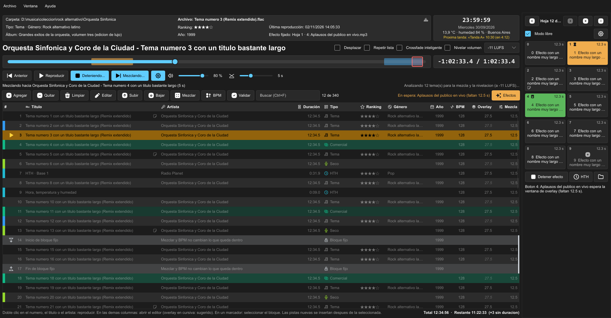
El panel de efectos se abre con el botón Efectos.
Botones
Un clic (o la tecla 0–9) dispara el efecto del botón. Si el botón está en espera, el clic cancela la espera. Un botón vacío muestra un +: con un clic se le asigna un archivo.
Cada botón muestra su número, el título del catálogo (o, si no tiene, el nombre del archivo sin la extensión) en hasta dos renglones —un nombre más largo se corta con «…» y completo se ve en el tooltip, junto a la ruta— y la duración (la del tramo, si se recortó). En naranja con un reloj de arena: en espera de su ventana. En verde con un parlante: sonando.
Clic derecho: Asignar archivo..., Editar... (abre el editor con ese archivo, para fijarle el tipo o el tramo que suena), Vaciar e Insertar en la playlist (deshabilitado para el tipo Efecto).
Las flechas cambian de hoja; + agrega una hoja y − quita la que se ve.
Detener efecto corta el efecto que suena (o el que espera) y devuelve la música a su nivel.
Anuncio de hora, temperatura y humedad (HTH)
Al final del panel, debajo de los mensajes de la botonera, el botón HTH inserta en la lista, después de la pista seleccionada, el servicio de hora, temperatura y humedad. En la lista se ve como «Hora, temperatura y humedad», con tipo HTH y franja celeste verdosa.
El clima que dirá el anuncio se ve en el reloj de la ventana principal: la temperatura, la humedad y la localidad; al pasar el puntero, cuánto hace de la última lectura (por ejemplo «Buenos Aires: 13,9 °C, humedad 84 % — Ultima lectura hace 4 min»). Se consulta a Open-Meteo cada 10 minutos desde que se abre el programa. Si no hay conexión el reloj lo muestra en rojo sin datos, con la antigüedad de la última lectura si la hubo; mientras el dato tenga menos de una hora se sigue usando, y pasada la hora el anuncio dice solo la hora.
Clic derecho en HTH abre un menú con:
Insertar el anuncio HTH: lo mismo que el clic.
Cambiar la localidad del clima...: abre la ventana Localidad del clima. Escriba el nombre de la ciudad (por ejemplo «Rosario») y pulse Enter: la búsqueda se hace en el servicio gratuito de Open-Meteo, sin clave, y muestra hasta 20 localidades con su departamento o partido, provincia y país, para distinguir las que se llaman igual. Elija una y pulse Usar esta localidad (o haga doble clic). El clima de la localidad anterior se descarta y el de la nueva se consulta en el momento; la elección queda guardada. Un clic en el clima del reloj abre la misma ventana.
Actualizar el clima ahora: consulta el clima sin esperar los 10 minutos (por ejemplo, al volver la conexión).
Carpeta de las locuciones...: lo mismo que el botón de la carpeta.
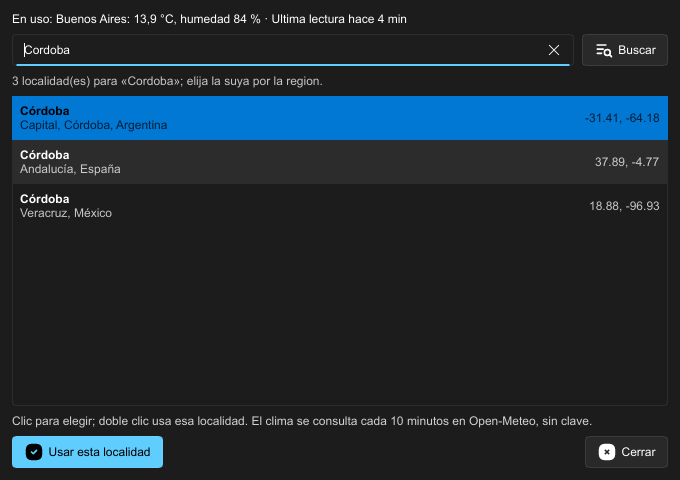
La ventana Localidad del clima: cada resultado muestra su región para elegir la correcta.
Se arma al salir al aire, no al insertarlo: justo antes de sonar se une la hora del reloj con el último clima conocido, así dice la hora real aunque se haya insertado una hora antes. Por ejemplo: «Son las quince y treinta. Temperatura: diecisiete grados. Humedad: setenta y seis por ciento.»
Sin internet: la voz sale de locuciones pregrabadas, que se unen recortando sus silencios y con una pausa breve entre frases. Cada locución puede tener dos tomas de la misma frase (por ejemplo 15.mp3 y 15'.mp3, una con más énfasis y otra más plana): en cada anuncio se elige al azar una de las dos por pieza, para que no suene siempre igual.
El clima (temperatura y humedad de la localidad elegida; de entrada, Buenos Aires) se consulta cada 10 minutos en el servicio gratuito Open-Meteo, desde que se abre el programa (lo muestra el reloj de la ventana principal). Sin conexión, o si el último dato tiene más de una hora, el anuncio dice solo la hora. La localidad se cambia con clic derecho en HTH o con un clic en el texto del clima (ver más abajo).
Con bases musicales: si la carpeta de locuciones tiene una subcarpeta bases con cortinas cortas, el botón inserta una base elegida al azar (sin repetir la anterior). En la lista se ve como «HTH · nombre de la base», con la misma franja.
La base es un tema común: se analiza, se mezcla con el tema anterior y con el siguiente, y se edita en el editor como cualquier otro (inicio, fin, intro, outro).
La ventana de overlay de la base marca dónde se dice el anuncio. Cuando la base empieza a sonar, la voz se arma con la hora en que se abre esa ventana y suena ahí, como un efecto fijado. Mientras habla, la base siempre baja (aunque Bajar la música durante el efecto esté desmarcado) y vuelve al terminar, con los ajustes del panel de efectos. Sin una ventana fijada se usa la sugerida por el análisis; sin ninguna, la voz arranca con la base.
La voz dura unos 9 segundos: si la ventana es más corta, la barra de estado lo avisa al guardar la base en el editor y al sonar.
La misma base puede estar varias veces en la lista: Validar no la cuenta como tema repetido.
Cambiar o quitar la base: con clic derecho en la fila del anuncio, Base del anuncio HTH lista las bases para elegir otra, y Sin base (la voz sola) la deja sin música de fondo. También pone una base a un anuncio que no la tenía. El anuncio que está sonando no se cambia.
Sin bases, el anuncio es la voz sola y suena sin mezcla, como un comercial: el tema anterior termina y el anuncio arranca después. No se analiza, no se edita ni cuenta pases, y puede estar varias veces en la lista.
El botón de la carpeta, junto a HTH, elige la carpeta de las locuciones. La primera vez que se pulsa HTH sin carpeta elegida, también la pide. Debe tener las subcarpetas hora (00 a 23) y minutos (00 a 59, donde 00 es «en punto»); temperatura (-10 a 50), humedad (000 a 100) y bases son opcionales. También se busca sola una carpeta locuciones junto al programa.
Si no se puede armar (por ejemplo, se borró la carpeta de locuciones), el anuncio se saltea y sigue el próximo tema, para no decir una hora vieja.
Ajustes
Junto a Modo libre está el botón del engranaje, que muestra u oculta el resto de los ajustes (desde Bajar la música durante el efecto hasta Vuelve en). Plegados, los diez botones, Detener efecto, HTH y la carpeta de las locuciones quedan a la vista sin desplazar, aun en Full HD con la escala al 150 %. Los ajustes siguen activos aunque estén ocultos, y el programa recuerda si quedaron plegados o desplegados. Si falta alto, los botones de efecto se achican antes de que el panel necesite desplazarse.
Control
Qué hace
Modo libre
Marcado: el efecto suena al pulsarlo. Sin marcar (trabado): espera la ventana de overlay del tema.
Bajar la música durante el efecto
Activa la atenuación de la música.
Ajuste inteligente
Iguala el efecto con la música y decide cuánto bajarla según lo fuerte de ese tramo.
Efecto (dB)
Volumen del efecto. Con ajuste inteligente, 0 dB es la sonoridad de la música. Doble clic: 0 dB.
Separación (con ajuste inteligente)
Cuántos dB por debajo del efecto queda la música: con más separación, la música baja más. Según lo fuerte del tramo, baja hasta la separación más 6 dB. Va de 4 a 24 dB; doble clic: 12 dB. También vale para la voz del anuncio HTH sobre su base, que siempre baja la base con el ajuste inteligente, aunque el panel diga lo contrario: si la locución se pierde en la base, suba la separación.
Música al (sin ajuste inteligente)
Nivel fijo de la música durante el efecto. Doble clic: 50 %. El mismo deslizante muestra la separación o este nivel, según esté o no el ajuste inteligente.
Atenua en
Lo que tarda en bajar la música; termina justo cuando arranca el efecto. Doble clic: 40 ms.
Vuelve en
Lo que tarda la música en volver después del efecto. Doble clic: 0,8 s.
15. El editor de pistas
Se abre con doble clic en las columnas de datos de una fila, con Editar de la barra, con el menú contextual de la fila o, para un efecto, con Editar... en el menú del botón. Recuerda su última posición y tamaño.
Varios monitores. Si el editor quedó en un monitor que ya no está conectado, al abrirlo aparece centrado sobre la ventana principal. El menú Ventana ofrece además Traer las ventanas a la ventana principal, que centra en el momento el editor y las demás ventanas abiertas (buscador, mantenimiento, pauta, órdenes y Acerca de), y Editor siempre centrado, que alterna entre Sí y No: con Sí, el editor se abre siempre centrado sobre la ventana principal en lugar de donde quedó la última vez. Las ventanas que se abren desde los menús (buscador del catálogo, mantenimiento, pauta de tandas, órdenes de publicidad, selector de avisos, anunciantes y Acerca de) aparecen siempre centradas sobre la ventana principal. Si una ya está abierta en otra pantalla, o en una que se desconectó, al pedirla otra vez vuelve sobre la principal; si está en la misma pantalla, solo pasa al frente.
Ocultar textos de los botones. En el menú Ventana, Ocultar textos de los botones alterna entre Sí y No y se recuerda al volver a abrir el programa. Con Sí, los botones de la ventana principal (transporte, barra de la lista, Efectos, Detener efecto y HTH) muestran solo su icono, y el nombre aparece en el tooltip al pasar el puntero. Con No, los textos se ven salvo cuando la ventana es angosta: por debajo de unos 1400 px lógicos de ancho con la botonera abierta (1120 sin ella), por ejemplo en Full HD con la escala al 150 %, los botones del transporte y de la barra de la lista quedan solo con el icono para que entre todo, botonera incluida. La ventana principal se puede achicar hasta 1180 × 600 px lógicos.
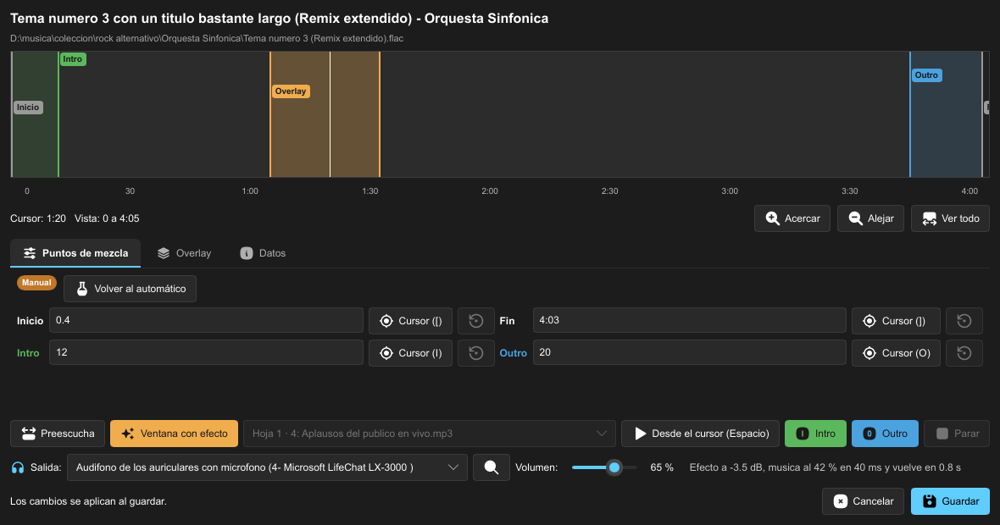
Editor de pistas, solapa Puntos de mezcla.
Forma de onda
Un clic mueve el cursor. Las marcas (Inicio, Intro, Overlay, Outro, Fin) se arrastran con el mouse; la zona naranja de la ventana de overlay se arrastra entera.
Acercar, Alejar y Ver todo controlan el zoom (también + y −).
Solapa Puntos de mezcla
Inicio y Fin (primer renglón): dónde empieza y dónde termina de sonar el tema; lo que queda afuera se saltea.
Intro y Outro (segundo renglón): duración del comienzo y del final que se usan para mezclar.
Cada valor se edita con un clic en su campo (Enter confirma) o con su botón Cursor, que lo lleva a la posición del cursor. El botón deshacer de al lado recupera el valor previo.
El rótulo Automático / Manual indica el origen; Volver al automatico vuelve a lo que propone el análisis.
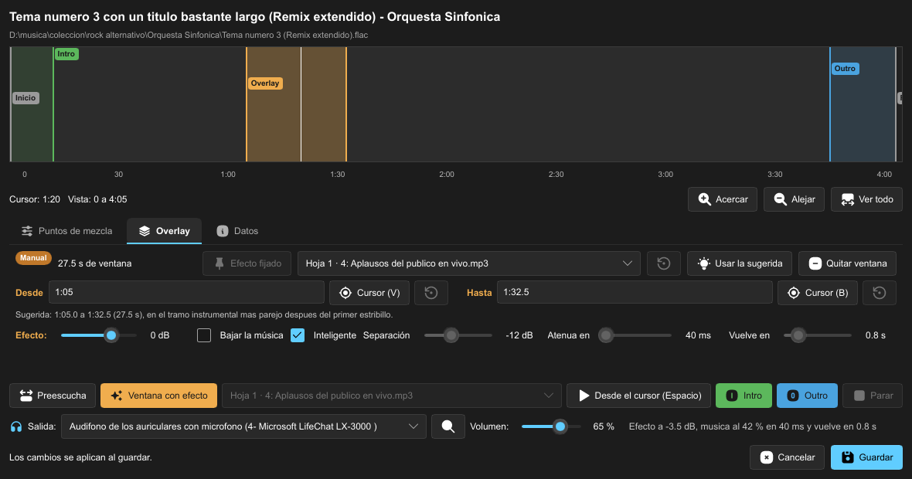
Solapa Overlay: ventana, efecto fijado y atenuación.
Solapa Overlay
Usar la sugerida toma la ventana que propone el análisis; Quitar ventana / Crear ventana.
Desde y Hasta, con sus botones Cursor (V) y Cursor (B) y sus deshacer.
Efecto fijado: el combo elige el efecto que suena solo con el tema. Si el combo muestra «(ninguno)», el botón Efecto fijado fija directamente el efecto elegido para probar (el combo junto a Ventana con efecto). El deshacer de al lado vuelve a la elección anterior. Solo se ofrecen efectos de la botonera de tipo Efecto o Seco.
Los ajustes de volumen y atenuación son los mismos del panel de efectos.
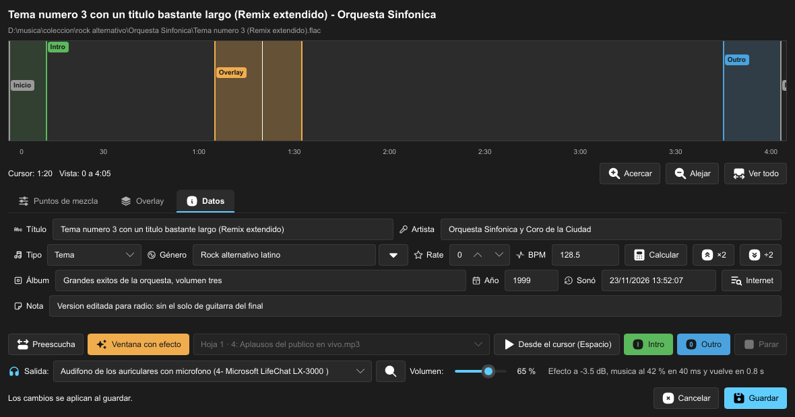
Solapa Datos.
Solapa Datos
Título, artista, tipo (el combo de la izquierda: Sin clasificar, Tema, Comercial, Anuncio, Publicidad, Efecto o Seco), género (texto libre; el botón de la derecha despliega todos los géneros que ya existen en el catálogo, en orden alfabético, así la lista crece con los que va usando; se desplaza con la rueda o la barra y se elige con un clic), ranking de 0 a 5, BPM (vacío: el del análisis; Calcular, ×2 y ÷2 lo corrigen), álbum, año y nota: una observación libre sobre el tema o elemento («versión editada para radio», «usar solo de noche»). La nota se ve al pasar el puntero por el título en la lista y por el botón de efecto; dejarla vacía la borra.
Preescucha
Botón
Qué escucha
Preescucha
El tema entero, de la marca de inicio a la de fin.
Ventana con efecto (ámbar)
Desde 3 s antes de la ventana hasta 2 s después, con el efecto fijado (o, si no hay, el elegido en el combo de prueba) sonando al abrirse la ventana, con la misma atenuación que al aire.
Desde el cursor (Espacio)
Desde el cursor hasta el fin. Espacio otra vez detiene.
Intro (verde)
Del inicio hasta 3 s después de la intro.
Outro (celeste)
De 3 s antes de la outro hasta el fin.
Parar
Detiene la preescucha.
Salida y volumen. El combo Salida elige por dónde suena la preescucha:
Misma salida de la musica: solo se puede preescuchar con la música detenida o en pausa.
Otra salida (por ejemplo, unos auriculares): se puede preescuchar con la música al aire, y el efecto de prueba también sale por allí. No puede ser la misma salida de la música; si la placa se desconecta, la preescucha vuelve sola a la salida de la música y avisa.
El botón de la lupa vuelve a buscar las salidas. Volumen es el volumen propio de la preescucha (tema y efecto de prueba). La salida y el volumen se recuerdan.
Guardar
Guardar aplica los cambios y los recuerda para ese archivo; Cancelar los descarta.
16. Clasificar el catálogo por tipo
Para clasificar un archivo, ábralo en el editor y elija el Tipo en la solapa Datos. Los avisos también se clasifican de a varios desde el selector de avisos (sección 17), y por MCP con definir_datos.
Si un tema que pasa a otro tipo tenía efecto fijado o ventana de overlay, el programa avisa que se van a quitar (junto con la intro y la outro) y pide confirmación. Con Cancelar se vuelve al tipo anterior.
Efectos: asígnelos a la botonera y márquelos con tipo Efecto desde Editar... del botón. Ahí también puede recortar su tramo con Inicio y Fin. Un archivo Efecto no entra en la lista: Agregar lo deja afuera con un aviso, Insertar en la playlist queda deshabilitado y un tema que ya está en la lista no puede pasar a Efecto (primero hay que quitarlo).
Secos: pueden ir en la botonera, para pisar como un efecto, y también en la lista como separadores (con Insertar en la playlist o Agregar).
Podcast: un programa pregrabado. Para que salga a una hora fija, prográmelo como una tanda de un solo aviso (sección 17); también se puede insertar a mano en la lista.
Comercial, Anuncio y Publicidad se insertan en la lista y forman tandas; desde la botonera, Insertar en la playlist los agrega aunque ya estén (pueden salir en varias tandas).
17. Tandas programadas y registro de comerciales
Tandas programadas
Una tanda programada es un grupo de avisos que sale solo a horario, por ejemplo «a las 10:30 y cada 30 minutos hasta las 20:00, de lunes a viernes». Se programa en la ventana Archivo › Pauta de tandas... (Ctrl+T) o por MCP con programar_tanda. Una tanda puede llevar Comercial, Publicidad, Anuncio, Podcast o Seco: para que un podcast salga, por ejemplo, todos los sábados a las 21:00, arme una tanda con ese único aviso y elija Bajar lo que suena a la hora exacta si tiene que empezar en punto.
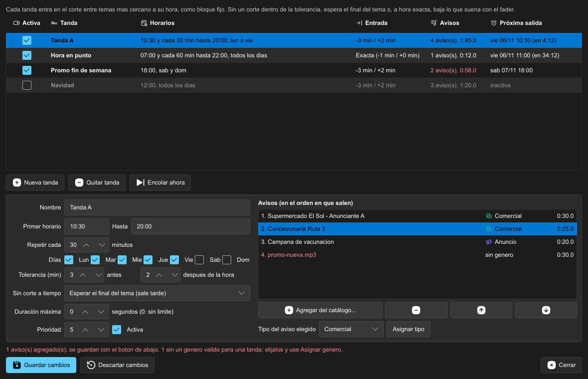
La pauta: arriba las tandas con su próxima salida; abajo, el formulario de la elegida y sus avisos (en rojo, uno sin tipo válido).
La tabla muestra cada tanda con sus horarios, cómo entra, sus avisos (en rojo si alguno falta o no tiene un tipo válido) y la próxima salida con su cuenta regresiva. La casilla Activa la suspende o la reanuda sin borrarla; al reanudarla, lo que ya pasó no se cuenta como perdido.
El formulario: nombre, primer horario, Repetir cada (0 = una vez por día), Hasta (último horario del día), días, tolerancia antes y después, qué hacer Sin corte a tiempo, Duracion maxima (lo que puede durar con los avisos de las órdenes; 0 = sin límite), prioridad y si está activa. Programar tanda o Guardar cambios lo aplica; Descartar cambios vuelve a lo guardado. Al renombrarla conserva su última salida.
Los avisos salen en el orden de la lista: Agregar del catalogo... abre el selector de avisos (ver más abajo) y las flechas los ordenan. Si un aviso no tiene tipo, elíjalo y use Asignar tipo (Comercial, Publicidad o Anuncio; se guarda en el catálogo, no en el archivo).
Encolar ahora pone la tanda en el próximo corte, fuera de su horario, sin cambiar su programación (por ejemplo, para reponer una salida perdida).
Bajo el reloj de la ventana principal se ve la próxima tanda y cuánto falta («Proxima tanda: «Tanda A» 10:30 (en 4:12)»); un clic abre la pauta.
Sin cortar temas: la tanda entra en el corte natural entre dos temas más cercano a su hora, dentro de la tolerancia (por defecto, hasta 3 minutos antes o 2 después). Si el tema termina temprano y el siguiente se pasaría mucho, entra antes; si el que suena termina después de la ventana, sale tarde, al final de ese tema.
Como bloque fijo: unos minutos antes, sus avisos se encolan después del tema que suena, encerrados en un bloque fijo (Mezclar y BPM no los desarman). Si el tema que suena está dentro de otro bloque fijo, la tanda va después de ese bloque; si ya viene otra tanda, va detrás.
Solo tipos de tanda: los avisos deben ser de tipo Comercial, Publicidad, Anuncio o Seco. Así no se mezclan con la música ni entre sí: el tema anterior suena hasta su final y cada aviso sale entero.
Horarios fijos: cada horario sale de la regla, no de sumar el intervalo a la última salida, así una tanda atrasada no corre las siguientes. Las salidas atendidas se anotan, y no se repiten aunque el programa se reinicie.
Hora exacta: si la tanda está marcada Bajar lo que suena a la hora exacta y no hay un corte natural dentro de su tolerancia, se encola poco antes y, a la hora pautada menos los segundos del fader, el tema que suena baja con un fundido para que el primer aviso salga en punto. No se corta un aviso ni un bloque fijo: en ese caso entra al final, como con tolerancia. Sirve para la hora en punto o un enlace con la red.
Prioridad: de 1 a 9. Si dos tandas tienen la misma hora, sale primero la de mayor prioridad y la otra va pegada detrás.
Salidas perdidas: si en la ventana de una tanda no suena nada (reproductor detenido o en pausa, o el programa cerrado), esa salida se da por perdida, se avisa en la barra de estado y queda en la bitácora.
Por MCP, listar_tandas muestra cada tanda con su próxima salida, encolar_tanda la encola ya y quitar_tanda la saca de la programación.
Selector de avisos del catálogo
Los avisos de las tandas y de las órdenes se eligen del catálogo de la emisora (todo lo que alguna vez entró a la lista), no del explorador de archivos. Agregar del catalogo..., en la pauta o en las órdenes, abre el selector para la tanda u orden que se está editando.
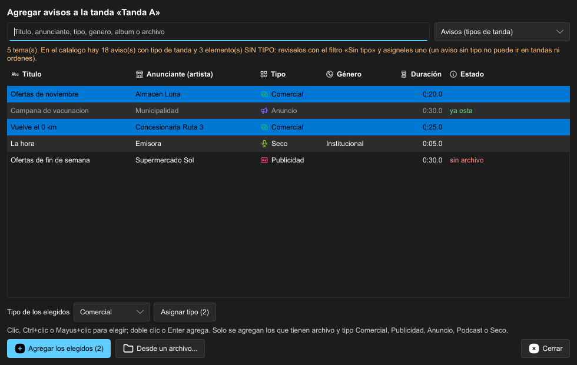
El selector con dos avisos elegidos; arriba, en naranja, la advertencia de los elementos del catálogo que no tienen tipo.
Búsqueda y filtro: se busca por título, anunciante (el artista de la ficha), tipo, género, álbum o archivo. El filtro muestra los Avisos (tipos de tanda: Comercial, Publicidad, Anuncio o Seco), los elementos Sin tipo o Todo el catalogo (menos los efectos, que solo van en la botonera).
Validación: solo se agregan los que tienen archivo y un tipo de tanda. Los demás quedan en la columna Estado en rojo con su motivo («sin tipo: asignele uno», «Tema: no va en tandas», «sin archivo»), y si se eligen no se agregan: el aviso de abajo dice cuáles y por qué. Los que ya están en la tanda u orden se marcan «ya esta» y no se repiten.
Advertencia de tipos faltantes: el resumen cuenta los avisos del catálogo y, en naranja, los elementos sin tipo. Con el filtro Sin tipo se revisan todos y, eligiendo varios, Asignar tipo les pone Comercial, Publicidad, Anuncio o Seco de una vez. El tipo queda en el catálogo y vale para la lista, las tandas y las órdenes; el género no cambia.
Desde un archivo... es para un aviso nuevo que todavía no está en el catálogo. Entra aunque no tenga tipo, pero se advierte, y la tanda u orden no se guarda hasta asignárselo; al hacerlo, queda en el catálogo.
Órdenes de publicidad
Una orden de publicidad es lo que contrata un anunciante: por ejemplo, «el anunciante A, del 1 al 30 de noviembre, cada 2 horas de 08:00 a 20:00» o «el anunciante B, 3 veces por día». Se cargan en Archivo › Ordenes de publicidad... (Ctrl+Mayús+T) o por MCP con programar_orden. Sus avisos no se ponen a mano: se reparten solos en las tandas programadas.
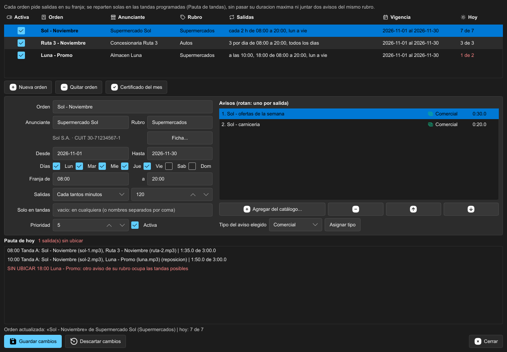
Las órdenes con cuántas salidas se ubicaron hoy; abajo, la pauta de hoy con una salida sin ubicar por competencia.
Frecuencia:cada tantos minutos desde el inicio de la franja (cada 120 = cada 2 horas: 08:00, 10:00… 20:00); veces por día, una en cada parte igual de la franja (3 por día de 08 a 20: una a la mañana, una a la tarde y una a la noche, en la tanda menos cargada de cada parte); o a horas fijas (menciones), en la tanda más cercana hasta 15 minutos antes o después.
Vigencia, días y franja: la orden solo pide salidas entre sus fechas, en sus días y dentro de su franja horaria. Solo en tandas la limita a ciertas tandas (vacío: cualquiera).
Avisos en rotación: cada salida lleva el aviso que le toca, y la rotación sigue de un día al otro. Se agregan con Agregar del catalogo..., igual que en las tandas, y deben ser de tipo Comercial, Publicidad, Anuncio o Seco.
El reparto (pauta del día) ubica primero las salidas más difíciles, las que tienen menos tandas posibles, y a igual dificultad las de mayor prioridad. Respeta la duración máxima de cada tanda, no pone dos avisos del mismo rubro en la misma tanda (separación de competencia) ni dos de la misma orden. Al encolarse la tanda, sus avisos fijos van primero y después los de las órdenes.
Sin ubicar: lo que no entra queda en rojo en Pauta de hoy con su motivo («no hay tandas entre…», «las tandas posibles están llenas», «otro aviso de su rubro…»), para resolverlo antes de salir al aire: agregar una tanda, ampliar su duración o la franja de la orden. La columna Hoy muestra cuántas salidas se ubicaron de las que pide la orden.
Reposición: si una tanda se pierde (nada sonaba en su horario) o un aviso de una orden sale cortado, ese aviso se repone solo en la próxima tanda posible del mismo día, dentro de la franja de la orden. Las reposiciones pendientes sobreviven a un reinicio.
Certificado de emisión:Certificado del mes arma, para el anunciante de la orden elegida, un CSV en la carpeta certificados con las salidas contratadas, las emitidas completas, las cortadas y el cumplimiento de cada orden, más el detalle de cada salida (hora, aviso, orden y tanda), y lo abre. Por MCP, certificado_de_emision acepta cualquier rango de fechas dentro de los tres meses que se conservan.
Anunciantes
La ficha de cada anunciante guarda los datos para facturarle y ubicarlo: nombre comercial (el que usan sus órdenes), razón social, CUIT, rubro, persona de contacto, teléfono, correo, dirección, agencia que lo representa y notas. Se carga en Archivo › Anunciantes..., con Ficha... desde la orden o por MCP con registrar_anunciante.
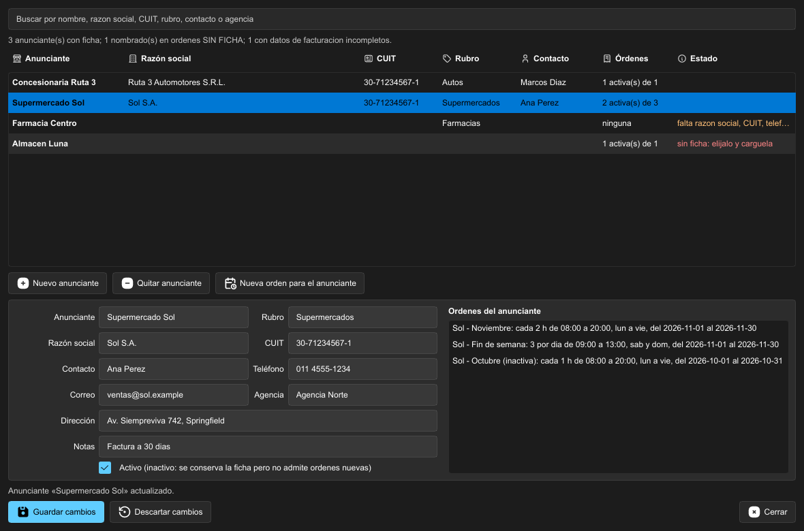
Los anunciantes con sus órdenes; abajo, la ficha del elegido. En rojo, uno nombrado en órdenes que todavía no tiene ficha.
Validación: el CUIT debe tener 11 dígitos y un dígito verificador correcto; se acepta con o sin guiones y se guarda como 30-71234567-1. El correo y el teléfono se revisan. El nombre comercial no distingue mayúsculas ni acentos: «Almacén Luna» y «almacen luna» son el mismo anunciante.
Lo que falta: la columna Estado advierte en naranja si falta la razón social, el CUIT o un teléfono o correo. En rojo aparecen los anunciantes nombrados en órdenes sin ficha: al elegirlos, el formulario se completa con su nombre y el rubro de sus órdenes.
Con las órdenes: debajo del anunciante de una orden se ve su razón social y su CUIT, o la advertencia de que no tiene ficha. Una orden de un anunciante con ficha toma su nombre tal como está escrito en la ficha y, si no indica rubro, el de la ficha. Nueva orden para el anunciante abre las órdenes con ese anunciante y su rubro.
Renombrar, desactivar y quitar: al cambiarle el nombre, sus órdenes pasan al nombre nuevo. Un anunciante inactivo conserva su ficha y sus órdenes, pero no admite órdenes nuevas. Solo se puede quitar la ficha de un anunciante sin órdenes.
Certificado: el certificado de emisión lleva en su encabezado la razón social, el CUIT y el contacto del anunciante.
Registro de comerciales
Cada salida al aire de la propaganda facturable, los elementos de tipo Comercial o Publicidad, se anota en la carpeta comerciales de los datos, en un archivo por mes (2026-11.csv), con separador punto y coma, para abrirlo en una planilla:
Inicio
Fin
Segundos emitidos
Duración
Completo
Título
Artista
Género
Archivo
Tanda
Orden
Tipo
2026-11-02 14:05:33
2026-11-02 14:06:03
30,0
30,2
Si
…
…
Pop
…
Tanda A 14:00
Sol - Noviembre
Comercial
Completo («Si» o «No») indica si salió entero o si se cortó (por Siguiente o Detener). Los segundos usan coma decimal. Tanda es la tanda programada que lo emitió y su hora pautada; queda vacía si el aviso se puso a mano. Orden es la orden de publicidad del aviso, si es de una. Tipo (Comercial o Publicidad) va al final para que las planillas de meses anteriores, que no la tienen, se sigan leyendo igual; Género es el estilo libre de la ficha. Los Anuncios (mensajes propios de la emisora), los Secos y los Efectos no se anotan.
Rotación: se conservan el mes actual y los dos anteriores, así el mes pasado siempre está completo para facturarlo. Al empezar un mes nuevo se borra el archivo del mes que queda afuera; guarde una copia antes si necesita conservarlo más tiempo.
Consulta: por MCP, registro_de_comerciales resume las salidas entre dos fechas (completas, cortadas y tiempo al aire) y las detalla con su tanda; se puede filtrar por anunciante, título o tanda.
Versiones anteriores: el registro único comerciales.csv se reparte una vez en los archivos de cada mes (con las fechas pasadas a ISO 8601) y el original queda como comerciales.csv.migrado.
Formato de fecha y hora
Inicio y fin se anotan en la hora local del equipo con el formato estándar ISO 8601: AAAA-MM-DD hh:mm:ss, es decir año, mes y día, y la hora de 0 a 23. Por ejemplo, 2026-11-02 14:05:33 es el 2 de noviembre de 2026 a las 14:05:33.
Con este orden la fecha no es ambigua: una fecha como 02/11/2026 puede leerse como 2 de noviembre o como 11 de febrero según el país. Además, las planillas la reconocen como fecha y ordenar por esa columna deja las salidas en orden cronológico.
18. Atajos de teclado
Ventana principal
0–9
Disparar el efecto del botón
Ctrl+F
Buscar en la lista
Ctrl+Mayús+F
Buscar en el catálogo
Ctrl+T
Pauta de tandas
Ctrl+Mayús+T
Órdenes de publicidad
Ctrl+O
Cargar lista
Ctrl+S
Guardar lista
Ctrl+Mayús+S
Guardar lista como
↑↓Enter
Saltar entre resultados (en el buscador)
Esc
Limpiar la búsqueda
Editor de pistas
Espacio
Preescuchar desde el cursor / detener
[]
Inicio / Fin al cursor
IO
Intro / Outro al cursor
VB
Desde / Hasta de la ventana al cursor
←→
Mover el cursor 0,1 s (con Mayús, 1 s)
+−
Acercar / alejar
19. Mantenimiento del catálogo
El catálogo reconoce cada archivo por su ruta. Si se mueve una carpeta de música a otro disco o a otra carpeta, las fichas siguen apuntando a la ruta anterior y el programa ve esos archivos como nuevos, sin sus datos. Archivo › Mantenimiento del catalogo... resuelve esto sin perder nada.
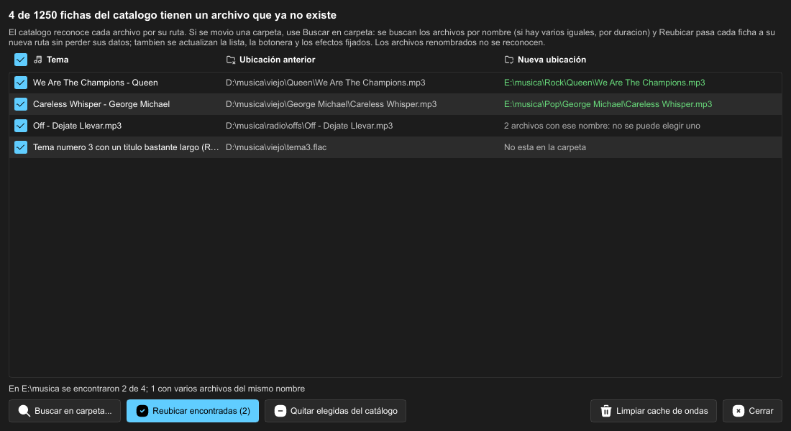
Fichas cuyo archivo ya no existe, con la nueva ubicación encontrada.
La ventana lista las fichas cuyo archivo ya no existe, con su tema y su ubicación anterior.
Buscar en carpeta... pide la carpeta donde quedaron los archivos y la recorre con sus subcarpetas. Cada archivo se busca por su nombre, sin distinguir mayúsculas; si hay varios con el mismo nombre, se elige el que dura lo mismo que la ficha. La columna Nueva ubicación muestra lo encontrado en verde.
Reubicar encontradas pasa cada ficha elegida a su nueva ruta sin perder sus datos (puntos de mezcla, overlay, tipo, género, ranking, BPM, última reproducción) y actualiza también la lista en curso, los botones de la botonera y los efectos fijados que apuntaban a esos archivos.
El programa recuerda cada reubicación: una lista guardada antes del cambio se abre con las rutas nuevas (queda marcada con * para guardarla al día).
Quitar elegidas del catalogo borra las fichas de archivos que ya no se van a usar. Pide confirmación y no toca ningún archivo de audio.
Limpiar cache de ondas borra las formas de onda guardadas de archivos que ya no existen, se movieron o cambiaron, y muestra el espacio liberado.
Las casillas de la izquierda eligen a qué fichas se aplican las acciones; la del encabezado marca o desmarca todas.
La búsqueda reconoce archivos movidos, no renombrados: un archivo con otro nombre no se encuentra. Si dos o más archivos tienen el mismo nombre y la misma duración, no se reubica ninguno, para no asociar la ficha con el tema equivocado.
Actualizar los datos: etiquetas y MusicBrainz
El catálogo copia las etiquetas de cada archivo (título, artista, álbum, año y género) la primera vez que lo ve; después manda lo que guardó, corregido o no. Para mejorar esos datos hay dos fuentes, y en las dos se revisa lo que cambiaría antes de aplicarlo. Solo cambia el catálogo de la emisora: los archivos no se tocan.
Releer las etiquetas: después de corregirlas con otro programa, como MusicBrainz Picard o Mp3tag.
Completar desde MusicBrainz (musicbrainz.org, la base libre de datos musicales que usa Picard): busca cada tema por título y artista y propone el álbum donde salió, el año de la primera edición, el género más votado y el título y el artista como figuran ahí. Necesita conexión a internet, no necesita clave y consulta un tema por segundo (en un catálogo grande lleva su tiempo; se puede detener y aplicar lo encontrado hasta ese momento).
Se usan desde tres lugares:
En la lista, clic derecho en una fila › Actualizar datos: se aplica a esa fila o, si está seleccionada junto con otras, a toda la selección.
En Buscar en el catálogo, con los botones Releer etiquetas y MusicBrainz: a los temas elegidos o, si no hay elegidos, a todos los resultados de la búsqueda. Una búsqueda previa, como genero:pop o anio:1990..1999, acota a qué temas se aplica.
En el editor, solapa Datos, botón MusicBrainz: para el tema que se está editando; lo que se aplica aparece en los campos del editor.
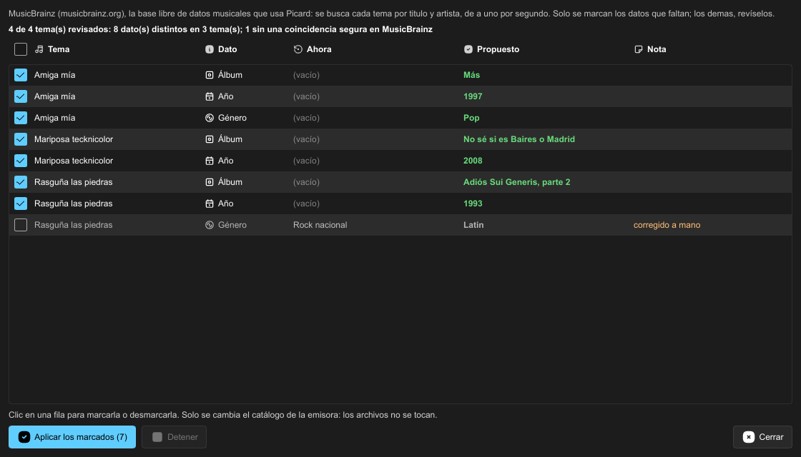
Datos propuestos por MusicBrainz: los que faltaban vienen marcados; el género que el usuario corrigió a mano, no.
La ventana Actualizar datos del catálogo muestra un renglón por cada dato distinto: el tema, el dato, lo que dice el catálogo ahora y lo propuesto. Solo se aplican los marcados (clic en el renglón o en su casilla; la del encabezado marca o desmarca todos). Nunca se propone borrar un dato. Vienen marcados:
siempre, los que completan un dato vacío;
de las etiquetas, también los que reemplazan un dato que usted no corrigió;
de MusicBrainz, ningún reemplazo: los datos que ya tienen valor se ofrecen desmarcados, para que decida.
El catálogo recuerda qué datos corrigió usted a mano (en el editor o por MCP) o eligió de MusicBrainz: esos aparecen con la nota corregido a mano y no se marcan solos. Las fichas creadas antes de esta versión no lo registraban; sus datos llevan la nota ficha anterior: no registra correcciones y tampoco se marcan solos. Lo que se aplica desde las etiquetas deja de contar como corregido.
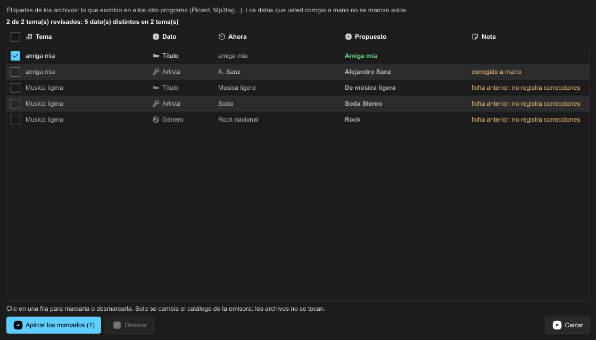
Etiquetas releídas: el artista corregido a mano y los datos de una ficha anterior quedan desmarcados.
Si usa Picard: desactive Renombrar archivos y Mover archivos en sus opciones (o elija que no cambie el nombre ni la carpeta). El catálogo reconoce cada archivo por su ruta y el mantenimiento los busca por nombre: un archivo renombrado pierde su ficha, con sus puntos de mezcla, ranking y última reproducción. Las etiquetas de los archivos WAV no se pueden leer (la librería de audio las descarta); conviene etiquetar MP3, FLAC u otros formatos.
MusicBrainz elige la grabación original: la del mismo título, de duración parecida al archivo (descarta versiones en vivo o extendidas) y con la primera edición más antigua; de sus ediciones toma el álbum de estudio, no un compilado. Si ninguna grabación coincide con seguridad, el tema se cuenta como sin una coincidencia segura y no se propone nada. Conviene revisar lo propuesto: en temas con muchas versiones puede elegir una grabación distinta de la que tiene el archivo.
20. Solución de problemas
Problema
Qué hacer
«No hay una salida de audio disponible» al abrir
Conecte o active una placa de sonido y vuelva a abrir el programa. En Linux, verifique que PulseAudio o PipeWire estén corriendo.
La preescucha dice que la salida no está conectada
Conecte la placa y pulse la lupa junto al combo Salida. Mientras tanto, la preescucha usa la salida de la música.
Un efecto trabado no suena
Espera la ventana de overlay del tema (el botón queda naranja). Si lo que suena no es un Tema (un comercial, un seco), espera al siguiente. Use Modo libre para que suene ya.
Un efecto no aparece en los combos del editor
Solo se ofrecen los de la botonera de tipo Efecto o Seco: márquelo desde Editar... del botón.
La barra de estado dice «Se salteo … porque el archivo no existe»
El archivo se movió, se renombró o se borró. La reproducción siguió con el próximo tema. Si lo movió, use Archivo › Mantenimiento del catalogo... para reubicarlo sin perder sus datos; si lo borró, Validar ofrece quitarlo de la lista.
No se puede agregar un archivo a la lista
Probablemente es de tipo Efecto: solo puede estar en la botonera.
El control por MCP no responde
El reproductor debe estar abierto. Verifique el puerto 8765 (o el de RAPTOR_MCP_PUERTO) y que ningún otro programa lo use.
El icono anclado en la barra de tareas no se actualiza
Desancle el programa y vuelva a anclarlo: Windows guarda los iconos en caché.
Ayuda › Manual no abre este manual
Copie Raptor_Manual_es.pdf (o Raptor_Manual_en.pdf) junto al ejecutable.
Ante cualquier error, la bitácora en la carpeta logs de los datos registra qué pasó.
21. Decisiones de diseño
Sin base de datos: formato abierto
MCP Raptor Player no usa una base de datos. El catálogo, la botonera, las listas y las preferencias se guardan en archivos JSON, y el registro de comerciales en CSV (ver la sección 8). Son formatos abiertos que se leen con cualquier editor de texto o planilla, se copian o respaldan con solo copiar la carpeta de datos y no dependen del programa para consultarlos.
El volumen lo permite: con una tanda cada media hora, el registro suma unas pocas decenas de miles de líneas por mes, que se leen en milisegundos. Para que no crezca sin límite se guarda un archivo por mes y se conservan tres meses. Las tandas y el registro se acceden a través de un contrato propio (AlmacenDeTandas y AlmacenDeEmisiones), así que si más adelante hace falta una base de datos (varias emisoras, reportes de años o consultas desde otra máquina) alcanza con otra implementación, sin tocar la programación ni la reproducción.
Sin huellas (hash) de los archivos
Al catalogar, el programa no calcula una huella (hash) del contenido de cada archivo para reconocerlo. Una huella sirve solo si el archivo no cambia nunca: editar el audio o tan solo corregir sus etiquetas cambia la huella, y la ficha quedaría desvinculada de su archivo igual que si se lo hubiera movido. Por eso cada archivo se reconoce por su ruta, y los movimientos se resuelven con el mantenimiento del catálogo (sección 19).
Traducciones en un catálogo gettext
Los textos se escriben en español y sus traducciones están en lang/en/LC_MESSAGES/mcp-raptor-player.po, un catálogo gettext estándar que se puede editar con cualquier herramienta de traducción. Lo usan las dos partes del programa: la interfaz Slint (textos marcados con @tr) y el código Rust (la macro tr!). Al compilar, el catálogo se convierte en código, así que una traducción con un marcador equivocado no compila. herramientas/traducciones.py junta los textos nuevos y avisa los que faltan traducir, y una prueba automática verifica que no falte ninguno. Para sumar otro idioma alcanza con agregar su catálogo en lang/ y ofrecerlo en el menú.
Los contenidos son inmutables
MCP Raptor Player parte de una premisa: los archivos de audio y su almacenamiento no se modifican. No es un editor de audio ni un editor de etiquetas (tagger):
Nunca escribe en los archivos de audio. El tipo, el título, el artista, el género, el ranking, los puntos de mezcla y todo lo que se corrige en el editor se guarda en su propio catálogo (mezcla.json), no en el archivo.
Las etiquetas del archivo se leen cuando entra a la lista y solo completan lo que su ficha todavía no tiene: lo que el usuario corrigió no se pisa.
La filosofía que se le pide al usuario es la misma: mantener ordenado su almacenamiento y no modificar los archivos de audio. Si hace falta mover carpetas, el mantenimiento del catálogo las vuelve a vincular sin perder datos.
Anexo
A. Complementos que mejoran el sonido
Un mejorador de sonido del sistema procesa todo el audio que sale por la placa: ecualizador, compresor, realce de graves, ampliación estéreo y limitador. MCP Raptor Player no lo necesita para funcionar, pero puede servir para darle carácter a la salida o compensar los parlantes del estudio.
Sistema
Complemento
Windows
FxSound (gratuito y de código abierto). Se instala como un dispositivo de salida propio, por ejemplo Altavoces (FxSound Audio Enhancer), que procesa el sonido y lo reenvía a la placa real. Si FxSound es la salida predeterminada de Windows, la música de Raptor sale procesada.
Linux
EasyEffects (gratuito y de código abierto), para sistemas con PipeWire. Se instala desde la tienda de software de la distribución o con Flatpak. Raptor sale por PulseAudio, que en las distribuciones actuales lo atiende PipeWire, así que EasyEffects procesa su salida en la sección Salida.
Recomendaciones
Nivelación:Nivelar volumen iguala los temas entre sí antes de la salida; el mejorador actúa después, sobre todo lo que sale. Para que la nivelación se siga notando, use en el mejorador una compresión suave.
Saturación: el realce de graves y el ecualizador suben el nivel. Active el limitador del mejorador o baje su ganancia de salida para que no recorte.
Preescucha: si en el editor elige como salida de preescucha la placa real (por ejemplo, los auriculares) y no la del mejorador, escucha los temas tal como son, sin procesar.
Efectos y anuncio HTH: pasan por el mismo camino que la música, así que el mejorador los procesa igual. No hace falta ajustar nada en Raptor.
Procesador de aire: si la emisora ya usa un procesador de audio externo o en el transmisor, el mejorador del sistema suele sobrar: dos cadenas de compresión seguidas aplastan el sonido.

 Publicidad
Publicidad Efecto
Efecto Podcast
Podcast en los selectores de avisos, y el anuncio HTH y los bloques fijos tienen el suyo.
en los selectores de avisos, y el anuncio HTH y los bloques fijos tienen el suyo. , doble clic: 80 %) y fader (, segundos de mezcla y de fundido; doble clic: 5 s). El engranaje muestra u oculta el volumen, el fader y las opciones de reproducción: ocultos, queda más lugar para el nombre del tema y la ventana se ve más despejada. La elección se recuerda.
, doble clic: 80 %) y fader (, segundos de mezcla y de fundido; doble clic: 5 s). El engranaje muestra u oculta el volumen, el fader y las opciones de reproducción: ocultos, queda más lugar para el nombre del tema y la ventana se ve más despejada. La elección se recuerda.